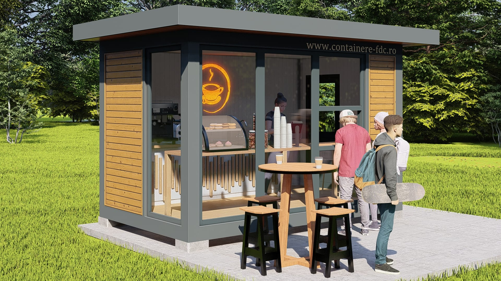

In era mobilitatii si eficientei, afacerile cauta solutii rapide, flexibile si accesibile pentru extinderea sau deschiderea unui punct de lucru. Containerele comerciale reprezinta o alternativa moderna la spatiile traditionale, fiind ideale pentru comert, servicii, expozitii sau activitati mobile. Acestea ofera un spatiu bine organizat, complet personalizabil si pregatit pentru functionare imediata, adaptat exact cerintelor oricarui domeniu de activitate.Fie ca este vorba de un magazin mobil, un fast food, un salon de infrumusetare sau un showroom, un container comercial poate fi proiectat cu toate dotarile necesare: instalatii electrice, sistem de climatizare, vitrine, usi termopan, grup sanitar si mobilier specific. Constructia modulara si portabilitatea il fac ideal pentru evenimente, targuri sau zone comerciale temporare. Alegand containere comerciale, castigi timp, flexibilitate si un control mai mare asupra investitiei initiale.
In era mobilitatii si eficientei, afacerile cauta solutii rapide, flexibile si accesibile pentru extinderea sau deschiderea unui punct de lucru. Containerele comerciale reprezinta o alternativa moderna la spatiile traditionale, fiind ideale pentru comert, servicii, expozitii sau activitati mobile. Acestea ofera un spatiu bine organizat, complet personalizabil si pregatit pentru functionare imediata, adaptat exact cerintelor oricarui domeniu de activitate.
Contactați-ne pentru o ofertă detaliată adaptată nevoilor dumneavoastră.
Cere Oferta Acum